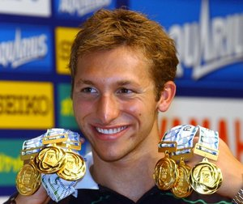
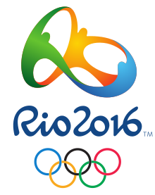
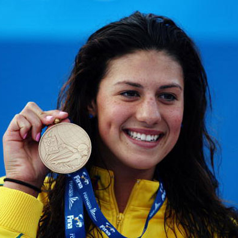
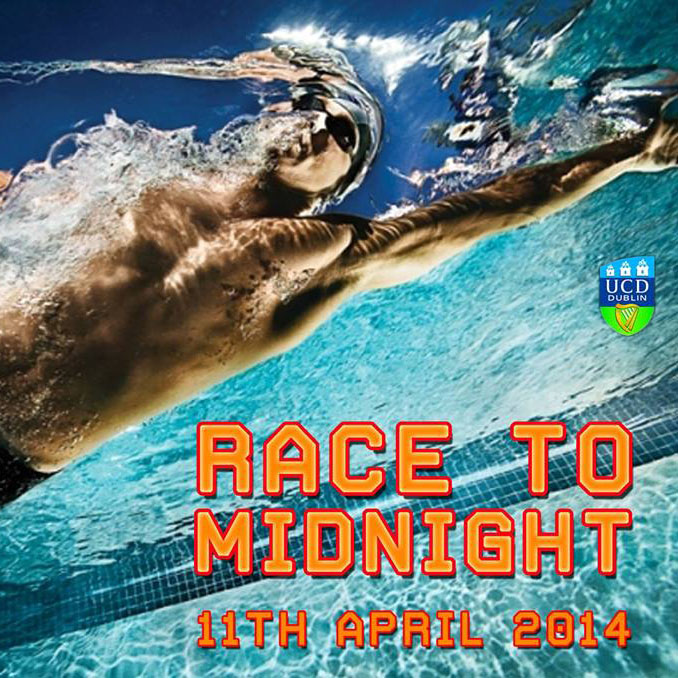
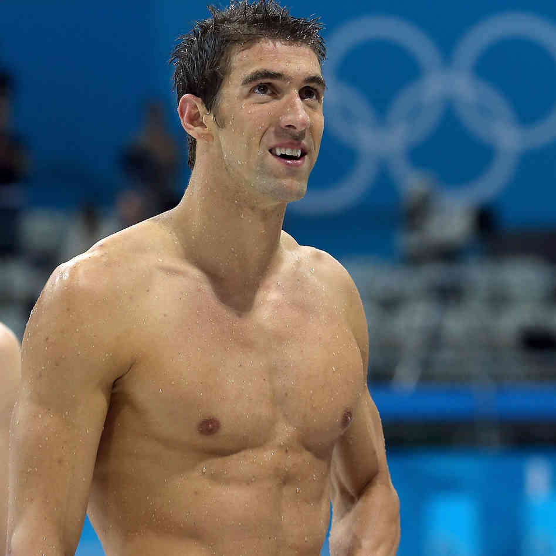

NEWS FEED:

BREAKING NEWS: Ian Thorpe who recently went under the knife is unlikely, according to officials,
to ever swim again following a severe infection in his shoulder. The 5 time olympic gold medalist
underwent surgery to aid his injured shoulder. He contracted the injection following it. His agent
James Erskine, as quoted from the Guardian.com, said "He's quite sick" and will never swim competitively again I think". He followed up with stating
that the surgery was serious but not life treatening.
He had made an ill-fated attempt to qualify for the 2012 London Olympic games but unfortunitely his shoulder had gotten the best of him and he failed to qualify. Since competing in the 2004 Athen games he has been competing in the World Championships and other major swimming events.

He had made an ill-fated attempt to qualify for the 2012 London Olympic games but unfortunitely his shoulder had gotten the best of him and he failed to qualify. Since competing in the 2004 Athen games he has been competing in the World Championships and other major swimming events.
Rio has been drawn to host the 2016 olympic games. The construction of the actual stadium is currently in development.
The IOC have now visited the site and area six times. One such visitor, as quoted from olympcis.org, said "I was impressed
by the level of preparation, the quality of everything that was presented and the desire to contribute. It's an important step
in our efforts to deepen dialogue with society and we can count on the help of all these organisations in the work that is ahead
of us. We see a unique opportunity to make the most of the Games' power as a catalyst, to meet the important needs of our society."
The stadium itself will actually be several smaller arenas with a coloured road leading between them. The plans for the stadium are really quite beautiful. All the buildings and the main road will glow orange, yellow, blue and red all of which appear in the Rio 2016 Logo.
Click here for a link to image!

The stadium itself will actually be several smaller arenas with a coloured road leading between them. The plans for the stadium are really quite beautiful. All the buildings and the main road will glow orange, yellow, blue and red all of which appear in the Rio 2016 Logo.
Click here for a link to image!
{kind=link}
The Austrailian olympian, Stepanie Rice, has decided to hand in the towel this year. The three time olympic
champion stated earlier this year that she was strongly considering retirement following the 2012 London games, "London
was really though" she said. She then went on to say "There were so many things that went wrong for me in that
preparation and it was like I was trying so hard to make everything so perfect and everything went wrong." Rice
failed to say what she would do next but she was adament in "proving" herself out of the water.

UCD recently hosted a charity swimming event in aid of Marymount university hospital and hospice.
The event took place on the 11th of April this year and managed to raise a massive 2750.84 euro. The event
started at 12pm and ended at 12am. Many swimmmers who took part swam the entire duration. One in particular
was Breccene Ennis who wrapped up a total of 33Km, A personal best.
Another participent Gary Mac Elhinney swam 10Km in just under 3 Hours and 20 Minutes averaging at 50 secs for 50 meters. "I did really well for the first 6 Kilometers, I was averaging about 17 Minutes 45 seconds, But after that I really started to slow down." He said. He followed up by saying, "I've always been really passionate about swimming and i'm delighted that I got the opportunity to use my passion for a really great cause".

Another participent Gary Mac Elhinney swam 10Km in just under 3 Hours and 20 Minutes averaging at 50 secs for 50 meters. "I did really well for the first 6 Kilometers, I was averaging about 17 Minutes 45 seconds, But after that I really started to slow down." He said. He followed up by saying, "I've always been really passionate about swimming and i'm delighted that I got the opportunity to use my passion for a really great cause".
Micheal Phelps has annouced his retirement from the olympics this year, "I am getting older, and I do
find it harder to recover." He said. The 18 time gold olympic champion has certainly made a huge impact
on the swimming community and has become the most famous swimmer of all time, Even more-so than the
Austrailian Ian Thorpe. It's dissapointing to see Phelps retire so early especially seeing as he was so close
to hitting 20 Gold medals.